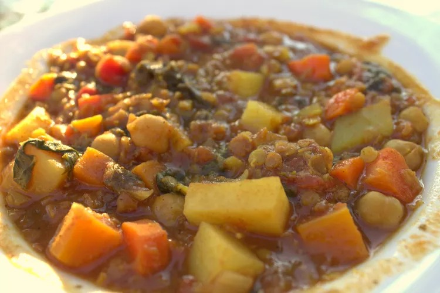

Make-Ahead Vegetarian Moroccan Stew

Description
This family-favorite Moroccan stew is delicious and healthy. Refrigerate it, freeze it, or eat it right away! Serve over couscous with a slice of warm bread.
ingredients
- Spice Mixture:
- 1 teaspoon ground cinnamon
- 1 teaspoon ground cumin
- 1 teaspoon kosher salt
- ½ teaspoon ground ginger
- ¼ teaspoon ground cloves
- ¼ teaspoon ground nutmeg
- ¼ teaspoon ground turmeric
- ⅛ teaspoon curry powder
- Stew:
- 1 tablespoon butter
- 1 medium sweet onion, chopped
- 2 cups finely shredded kale
- 4 (14.5 ounce) cans organic vegetable broth
- 1 (15 ounce) can garbanzo beans, drained
- 1 (14.5 ounce) can diced tomatoes, undrained
- 3 large potatoes, peeled and diced
- 2 medium sweet potatoes, peeled and diced
- 4 large carrots, chopped
- 1 cup dried lentils, rinsed
- ½ cup chopped dried apricots
- 1 tablespoon honey
- 1 teaspoon ground black pepper, to taste
- 1 tablespoon cornstarch (Optional)
- 1 tablespoon water (Optional)
Directions
- Make the spice mixture: Mix cinnamon, cumin, salt, ginger, cloves, nutmeg, turmeric, and curry powder together in a bowl.
- Make the stew: Melt butter in a large pot over medium heat. Add onion and cook until soft and just beginning to brown, 5 to 10 minutes. Stir in kale and spice mixture; cook and stir until kale begins to wilt and spices are fragrant, about 2 minutes.
- Add broth, garbanzo beans, tomatoes, potatoes, sweet potatoes, carrots, lentils, apricots, and honey; stir to combine and bring to a boil.
- Reduce the heat to low and simmer for 5 minutes. Remove from the heat and let cool for 30 to 40 minutes. Cover the pot and refrigerate for up to 3 days.
- When ready to eat, remove from the refrigerator and bring to a boil. Reduce the heat and simmer until vegetables are tender and stew is heated through, about 25 minutes. Season with black pepper. If a thicker stew is desired, dissolve cornstarch in water. Stir mixture into stew and simmer until thickened, about 5 more minutes.
To Freeze:
Follow instructions through Step 4, but when cool, transfer stew to a freezer-safe container and freeze for up to 3 months. When ready to eat, thaw frozen stew in the refrigerator for 24 to 48 hours, then continue with Step 5 as written.
To Enjoy Immediately:
Follow instructions through Step 3. Once ingredients come to a boil, reduce the heat to low and simmer until vegetables and lentils are tender, about 30 minutes. Season with black pepper. If a thicker stew is desired, dissolve cornstarch in water. Stir mixture into stew and simmer until thickened, about 5 minutes.